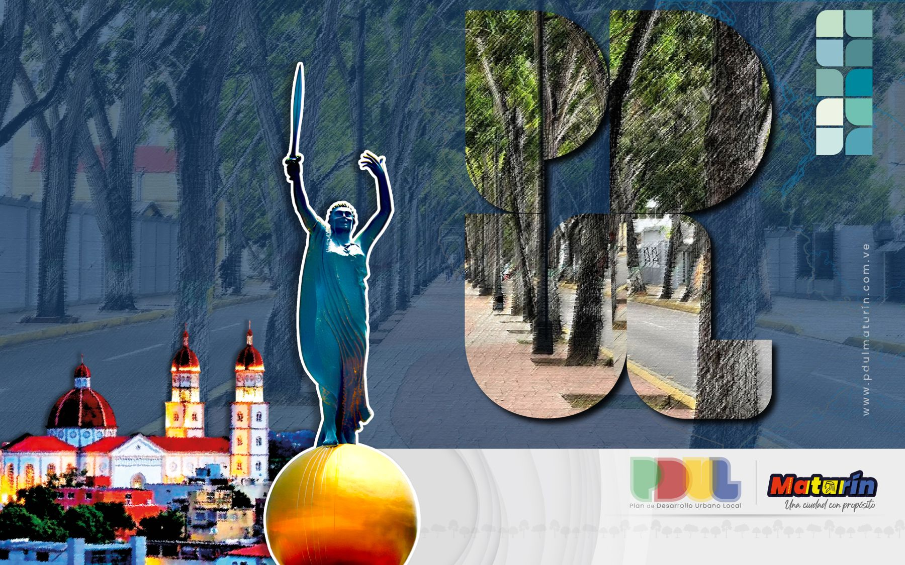

Regulación del uso del suelo
1 · Ordenar e integrar el territorioEstablecer qué zonas se destinan a vivienda, comercio, industria, recreación o preservación ambiental.
Plan de Desarrollo Urbano Local.
El instrumento que orienta, regula y administra el desarrollo físico y territorial del municipio.

Un plan que ordena
El Plan de Desarrollo Urbano Local (PDUL) de Maturín es el instrumento técnico y legal fundamental para orientar, regular y administrar el desarrollo físico y territorial del municipio. Nacemos con el firme propósito de dejar atrás el crecimiento espontáneo para convertir a la capital monaguense en una ciudad diseñada con propósito. Trabajamos articuladamente integrando la planificación técnica institucional con la participación protagónica del Poder Popular.
Quiénes somos
Establecer qué zonas se destinan a vivienda, comercio, industria, recreación o preservación ambiental.
Planificar las redes de transporte, vialidad, servicios públicos (agua, electricidad, saneamiento) y equipamientos urbanos (escuelas, hospitales, parques).
Equilibrio entre el crecimiento económico, la inclusión social y la conservación del medio ambiente y del patrimonio cultural.
Identificar zonas vulnerables a desastres naturales o socionaturales para restringir su ocupación e implementar medidas preventivas.
Servir de base legal para licencias de construcción, permisos de habitabilidad y zonificación.
Atraer y canalizar la inversión pública y privada de manera organizada, coherente con las necesidades reales de la población.
La misión del PDUL es transformar el espacio urbano en un entorno ordenado, eficiente, seguro, equitativo y sostenible, garantizando el bienestar de sus habitantes y el desarrollo armónico del municipio.
Imagen-objetivo: una ciudad que se consolida bajo un modelo urbano inclusivo, más humano, sustentable, moderno y resiliente.
Superar el crecimiento desordenado asegurando que la expansión urbana vaya de la mano con la cobertura y optimización de los servicios públicos esenciales y con espacios desarrollados de forma equitativa.
El diseño de la ciudad no se decide solo desde un escritorio técnico: integra a comunidades, comunas y voceros locales en la construcción de su propio modelo territorial.
Una dinámica urbana amigable con el ambiente, ordenada bajo criterios técnicos y preparada para un crecimiento armónico durante los próximos 15 años.
Enfocados en resolver el crecimiento desordenado de la ciudad y proyectarla a un horizonte de 15 años.
Garantizar que todos los sectores y parroquias del municipio tengan acceso equitativo a servicios públicos, viviendas dignas, equipamientos e infraestructura, sin distinción social o geográfica.
Diseñar la ciudad bajo criterios técnicos que respeten los recursos naturales, prevengan riesgos ambientales y aseguren mejor calidad de vida a las futuras generaciones.
Democratizar el ordenamiento territorial integrando a consejos comunales, comunas y vecinos en las etapas de diagnóstico, consulta y propuesta.
Regular y definir con claridad el uso del suelo (residencial, comercial, industrial y recreativo) para evitar la expansión caótica e ilegal.
Reestructurar las arterias viales, optimizar el transporte público, reordenar el pasaje urbano y recuperar la red de semáforos.
Mejorar la recolección de desechos sólidos, el alumbrado público, el agua potable y el saneamiento en el municipio.
Actualizar y modernizar el catastro municipal para administrar mejor el territorio y la recaudación fiscal.
Rehabilitar áreas de uso común, avenidas principales, parques y condominios para fomentar el esparcimiento y el saneamiento urbano.
El objetivo central es pasar de una ciudad que creció por expansión espontánea a una ciudad pensada y diseñada con propósito, ordenada, segura y funcional.
Consejos comunales, comunas y vecinos son parte del diagnóstico, la consulta y la propuesta del plan.
Escribir al PDULSector Las Avenidas, Av. Andrés Eloy Blanco, C.P. Cristina, LC-01.